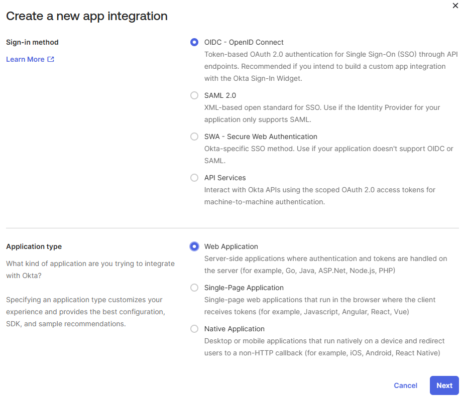

Este tutorial é uma contribuição da comunidade e não é suportado pela equipe Nullcore. Serve apenas como uma demonstração sobre como personalizar o Nullcore para o seu caso de uso especÃfico. Quer contribuir? Confira o tutorial contribuinte.
🔗 Okta OIDC SSO Integration
Visão geral
Esta página de documentação descreve as etapas necessárias para integrar o OKTA OIDC Single Sign-On (SSO) ao Nullcore. Também cobre oopcionalRecursos para gerenciar grupos de usuários abertos da Webui com base na associação do grupo Okta, incluindoCriação de grupo just-in-time (JIT). Seguindo estas etapas, você permitirá que os usuários efetuem login para abrir o WebUI usando suas credenciais da OKTA. Se você optar por ativar a sincronização do grupo (ENABLE_OAUTH_GROUP_MANAGEMENT), os usuários serão atribuÃdos automaticamente a grupos relevantes no Webui aberto com base em seus grupos OKTA após o login. Se vocêtambémAtivar criação do grupo JIT (ENABLE_OAUTH_GROUP_CREATION), os grupos presentes nas reivindicações de Okta, mas ausentes no Webui aberto serão criados automaticamente durante o login.
Pré -requisitos
- Uma instância aberta ou existente da Web.
- Uma conta OKTA com privilégios administrativos para criar e configurar aplicativos.
- Entendimento básico das variáveis ​​OIDC, OKTA Application Configuration e Webui Environment.
Configurando okta
Primeiro, você precisa configurar um aplicativo OIDC em sua organização OKTA e configurar um reivindicação de um grupo para aprovar informações do grupo para abrir o WebUI.
1. Crie/configure o aplicativo OIDC em Okta
-
Faça login no seu console administrativo da OKTA.
-
Navegar paraAplicativos> Aplicativos
-
Crie um novoOIDC - OpenID ConnectAplicação (escolhaAplicativo da Webcomo tipo) ou selecione um existente que você deseja usar para o Nullcore.

-
Durante a configuração ou no aplicativoEm geralGuia Configurações, configure oURIs redirecionados de login. Adicione o URI para sua instância aberta da Webui, seguida de
/oauth/oidc/callback. Exemplo:https://your-open-webui.com/oauth/oidc/callback -
Tome nota doID do clienteeSegredo do clientefornecido no aplicativoEm geralguia. Você precisará disso para a configuração aberta do WebUI.

-
Verifique se os usuários ou grupos corretos são atribuÃdos a este aplicativo sob oTarefasguia.
2. Adicione uma reivindicação de grupos ao token de identificação
(Opcional)Para ativar o gerenciamento automático de grupo em Webui aberto com base nos grupos OKTA, você precisa configurar o OKTA para enviar as associações de grupo do usuário no token de identificação. Se você precisar apenas de login do SSO e preferir gerenciar grupos manualmente no Webui aberto, poderá pular esta seção.
- No console do administrador, vá paraAplicativos> Aplicativose selecione seu aplicativo cliente OIDC.
- Vá para oAssineguia e cliqueEditarnoToken de ID de conexão OpenIDseção.
- NoTipo de reclamação em grupoSeção, selecioneFiltro
- NoFiltro de reivindicações de gruposeção:
- Digitar
groupscomo o nome da reivindicação (ou use o padrão, se presente). - SelecioneMatches regexdo menu suspenso.
- Digitar
.*No campo Regex. Isso incluirá todos os grupos dos quais o usuário é membro. Você pode usar um regex mais especÃfico, se necessário.
- Digitar
- CliqueSalvar
- Clique noVoltar às aplicaçõeslink.
- DoMaismenu suspenso de botão para o seu aplicativo, cliqueAtualizar dados do aplicativo
Para configurações mais avançadas de reivindicações de grupo, consulte a documentação da OKTA sobrePersonalizando tokensefunções do grupo
3. Aplicação do MFA (por exemplo, Google Authenticator)
Para melhorar a segurança, você pode aplicar a autenticação multifatorial (MFA) para usuários que estão fazendo login no WebUI aberto via OKTA. Este exemplo demonstra como configurar o Google Authenticator como um fator adicional.
-
Configure um autenticador
- No console administrativo de Okta, navegue paraSegurança> Autenticadores
- CliqueAdicionar autenticadore adicioneGoogle Authenticator
- Durante a configuração, você pode definir"Verificação do usuário"para"Obrigatório"Para aumentar a segurança.
-
Crie e aplique uma polÃtica de assinatura
- Vá paraSegurança> Autenticadores, clique noAssineguia.
- CliqueAdicione uma polÃticaPara criar uma nova polÃtica (por exemplo, "PolÃtica do Webui MFA").
- Na polÃtica que você acabou de criar, cliqueAdicione a regra
- Configure a regra:
- Definir"Se o IP do usuário for"para"Em qualquer lugar"
- Definir"Então o acesso é"para"Permitido após a autenticação bem -sucedida"
- Sob"E o usuário deve autenticar com", selecione"Senha + outro fator"
- Verifique se o fator desejado (por exemplo, Google Authenticator) está incluÃdo em"E as restrições de fatores de posse são"
- Por fim, atribua esta polÃtica ao seu aplicativo Nullcore. Vá paraAplicativos> Aplicativos, selecione seu aplicativo OIDC e sob oAssineguia, selecione a polÃtica que você criou.
Agora, quando os usuários efetuam login para abrir o WebUI, eles serão obrigados a fornecer sua senha OKTA e um código de verificação adicional do Google Authenticator.
Por padrão, a polÃtica de assinatura de Okta pode não solicitar a MFA em todos os login do mesmo dispositivo ou navegador para melhorar a experiência do usuário. Se você precisar de MFA para cada sessão, poderá ajustar essa configuração dentro da regra de polÃtica criada. Procure o"Prompt para re-autenticação"configurar e configurá -lo como"Cada tentativa de login"
Configurando Webui aberto
Para ativar o OKTA OIDC SSO no Nullcore, você precisa definir as seguintes variáveis ​​de ambiente central. Variáveis ​​adicionais são necessárias se você deseja ativar o recurso de gerenciamento de grupo opcional.
# --- OIDC Core Configurações ---
# Ativar inscrição OAuth se você deseja que os usuários possam criar contas via okta
# Enable_oauth_signup = "true"
# ID do cliente do seu aplicativo OKTA
Oauth_client_id = "your_okta_client_id"
# O segredo do cliente do seu aplicativo okta
Oauth_client_secret = "your_okta_client_secret"
# O URL da descoberta OIDC da sua organização OKTA
# Formato: https: // <icer-okta-domain> /.well-nknown/openid-configuration
# Ou para um servidor de autorização especÃfico: https: // <an-okta-domain>/oauth2/<auth-sever-id> /.well-nknown/openid-configuration
Openid_provider_url = "your_okta_oidc_discovery_url"
# Nome exibido no botão Login (por exemplo, "Login com okta")
Oauth_provider_name = "okta"
# Escopos a serem solicitados (o padrão geralmente é suficiente)
# OAuth_Scopes = "Grupos de perfil de email OpenID" # Garantir 'Grupos' está incluÃdo se não padrão
# --- OAuth Group Management (Opcional) ---
# Definir como "true" apenas se você configurou a reivindicação de grupos em Okta (Etapa 2)
# e deseja que os grupos Webui abertos sejam gerenciados com base nos grupos OKTA após o login.
# Isso sincroniza grupos existentes. Os usuários serão adicionados/removidos dos grupos Nullcore
# Para corresponder às reivindicações do grupo Okta.
# Enable_oauth_group_management = "true"
# Exigido apenas se ativar_oauth_group_management for verdadeiro.
# O nome da reivindicação no token de identificação que contém informações do grupo (deve corresponder à OKTA Config)
# Oauth_group_claim = "grupos"
# Opcional: Ativar criação de grupos Just-in-time (JIT) se eles existirem nas reivindicações de Okta, mas não no Webui aberto.
# Requer enable_oauth_group_management = "true".
# Se definido como false (padrão), apenas os grupos existentes serão sincronizados.
# Enable_oauth_group_creation = "false"
SubstituirYOUR_OKTA_CLIENT_ID, Assim,YOUR_OKTA_CLIENT_SECRET, eYOUR_OKTA_OIDC_DISCOVERY_URLcom os valores reais da sua configuração de aplicativo OKTA.
Para ativar a sincronização do grupo com base nas reivindicações da OKTA, definidoENABLE_OAUTH_GROUP_MANAGEMENT="true"e garantirOAUTH_GROUP_CLAIMcorresponde ao nome da reivindicação configurado em Okta (o padrão égroups
ParatambémHabilite a criação automática de justiça (JIT) de grupos que existem em Okta, mas ainda não em Webui Open, SETENABLE_OAUTH_GROUP_CREATION="true". Você pode deixar isso comofalseSe você deseja gerenciar apenas associações para grupos que já existem no Webui aberto.
QuandoENABLE_OAUTH_GROUP_MANAGEMENTestá definido comotrue, As associações de grupo de um usuário em webui aberto serãoestritamente sincronizadocom os grupos recebidos em suas reivindicações de Okta em cada login. Isso significa:
- Os usuários serãoadicionadoPara abrir os grupos da Webui que correspondem às suas reivindicações de Okta.
- Os usuários serãoremovidode qualquer grupo aberto da webui (incluindo aqueles criados ou atribuÃdos manualmente em webui aberto) se esses grupos foremnãoPresente em suas reivindicações de Okta para essa sessão de login.
Certifique -se de que todos os grupos necessários sejam configurados corretamente e atribuÃdos em Okta e incluÃdos na reivindicação do grupo.
Ao implantar Webui aberto em vários nós (por exemplo, em um cluster de Kubernetes ou atrás de um balanceador de carga), é crucial garantir a persistência da sessão para uma experiência perfeita do usuário, especialmente com SSO. Defina oWEBUI_SECRET_KEYVariável de ambiente para oMesmo valor seguro e únicosobretodosAbra instâncias da webui.
# Exemplo: Gere uma forte chave secreta (por exemplo, usando o OpenSSL rand -hex 32)
Webui_secret_key = "your_unique_and_secure_secret_key"
Se essa chave não for consistente em todos os nós, os usuários poderão ser forçados a fazer login novamente se a sessão for roteada para um nó diferente, pois o token de sessão assinado por um nó não será válido em outro. Por padrão, a imagem do docker gera uma chave aleatória no primeiro inÃcio, o que não é adequado para configurações de vários nós.
Se você pretendeapenasPermitir logins via OKTA (e potencialmente outros provedores de OAuth configurados), você pode desativar o formulário de login padrão de email/senha definindo a seguinte variável de ambiente:
Enable_login_form = "false"
ContextoENABLE_LOGIN_FORM="false" requer ENABLE_OAUTH_SIGNUP="true"a ser definido também. Se você desativar o formulário de login sem permitir a inscrição do OAuth,Os usuários (incluindo administradores) não poderão fazer login.Verifique se pelo menos um provedor de OAuth está configurado eENABLE_OAUTH_SIGNUPestá ativado antes de desativar o formulário de login padrão.
Reinicie sua instância aberta do Webui depois de definir essas variáveis ​​de ambiente.
Verificação
- Navegue até a página de login do Webui aberto. Você deve ver um botão rotulado como "Login com Okta" (ou o que quer que você defina
OAUTH_PROVIDER_NAME - Clique no botão e autentique através do fluxo de login da OKTA.
- Após a autenticação bem -sucedida, você deve ser redirecionado de volta para abrir o Webui e fazer login.
- Se
ENABLE_OAUTH_GROUP_MANAGEMENTé verdadeiro, faça o login como um usuário não administrado. Seus grupos dentro da Webui aberta devem agora refletir estritamente suas associações de grupo atuais em Okta (qualquer associação em gruposnãona reivindicação de Okta será removida). SeENABLE_OAUTH_GROUP_CREATIONTambém é verdade, quaisquer grupos presentes nas reivindicações OKTA do usuário que não existiam anteriormente no Webui aberto agora deveriam ter sido criadas automaticamente. Observe que os grupos de usuários administrativos não são atualizados automaticamente via SSO. - Verifique os logs do Nullcore Server para qualquer OIDC ou erros relacionados ao grupo se encontrar problemas.
Solução de problemas
-
400 Bad Soldem/Redirecionar URI Incompatch:Verifique se oURI de redirecionamento de loginno seu aplicativo OKTA corresponde exatamente
<your-open-webui-url>/oauth/oidc/callback -
Grupos que não estão sincronizando:Verifique se o
OAUTH_GROUP_CLAIMA variável de ambiente corresponde ao nome da reivindicação configurado nas configurações de token da OKTA ID. Certifique -se de que o usuário está conectado e volte após as alterações do grupo - é necessário um fluxo de login para atualizar OIDC. Lembre -se de que os grupos administrativos não são sincronizados. -
Erros de configuração:Revise os logs do Nullcore Server para obter mensagens de erro detalhadas relacionadas à configuração do OIDC.
-
Consulte o oficialDocumentação aberta da Webui SSO
-
Consulte oDocumentação do desenvolvedor da OKTA